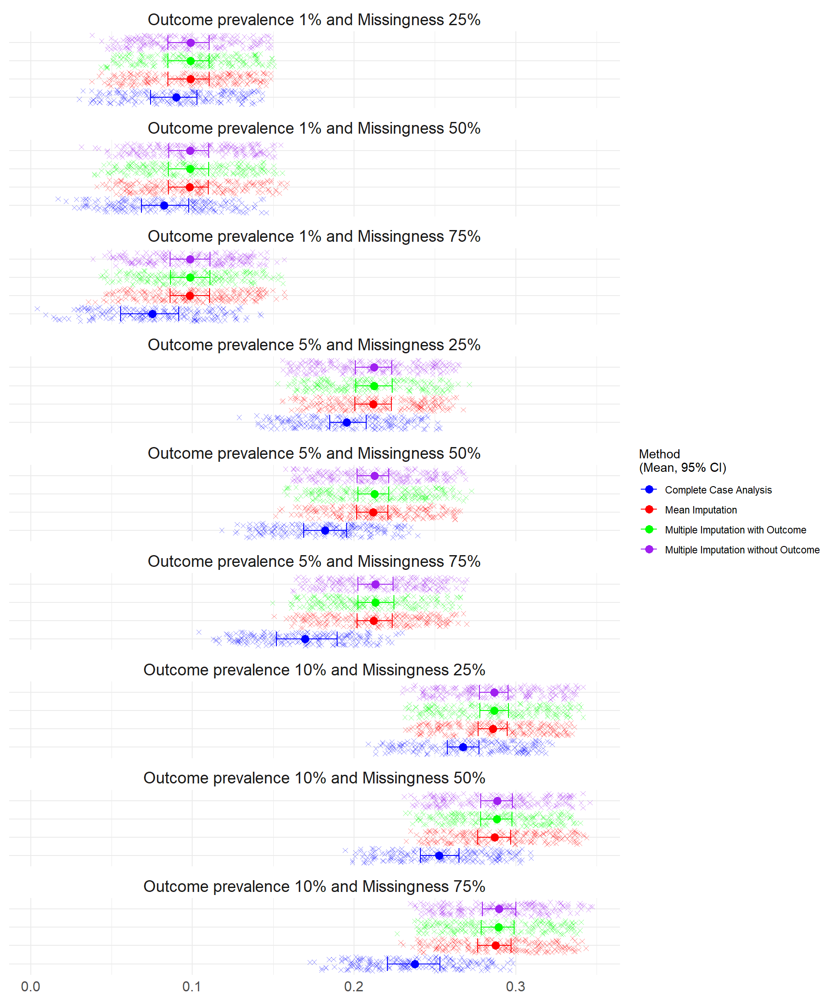

10 Results under MNAR for N=10,000
10.1 Sample size N=10,000
10.1.0.1 Brier Score
The Brier score ranges between 0 (perfect accuracy) and 1 (perfect inaccuracy).
10.1.0.2 Discrimination
At lower missingness under each prevalance, the discrimination (AUC) was highest. However, the range of the AUC varied very little between the lowest at 10% prevalance, 75% missingness and MI without the outcome (0.73 95% CI 0.71, 0.75) and the highest at 1% prevalance, 25% missingness and CCA (0.78 95% CI 0.71, 0.84), with large overlap in the confidence intervals at each method under each scenario. The CCA method had the highest average for each scenario however it also had the largest variability, ?fig-auc.
10.1.0.3 Calibration in the Large and Calibration Slope
The Calibration was assessed through Calibration in the Large (CATL) and the Calibration Slope.
The ideal value of CATL is 0, which indicates perfect calibration, positive values indicate the model is underestimating the risk while negative values indicate overestimation. Larger deviations from 0 suggest poorer calibration.
The ideal value of the Calibration Slope is 1 indicating perfect calibration across all risk levels. Values less than 1 suggest overfitting (predictions are too extreme), while values greater than 1 suggest underfitting (predictions are too conservative). Values that differ significantly from 1 indicate poor calibration.
10.1.1 Bias
The Bias was assessed for each simulation (where 0 indicates no bias and the model estimates are on average equal to the true values).
10.1.2 Root Mean Square Error
The RMSE was assessed for each simulation where lower error indicates a better fit of the model. The lowest prevalence simulations (1%) had the lowest mean square error.

Below, Table 10.1 summarises the Performance Measures under N=100,000.
| Scenario | Method to handle missing data | Performance Measure | Average | Lower Confidence Interval | Upper Confidence Interval | Number of simulations that failed to converge |
|---|---|---|---|---|---|---|
| Outcome prevalence 10% and Missingness 75% | Complete Case Analysis | Calibration in the Large | -0.1981 | -0.4051 | -0.0296 | 0 |
| Outcome prevalence 10% and Missingness 75% | Complete Case Analysis | Calibration Slope | 1.0109 | 0.8404 | 1.1641 | 0 |
| Outcome prevalence 10% and Missingness 75% | Complete Case Analysis | AUC | 0.7653 | 0.7299 | 0.7982 | 0 |
| Outcome prevalence 10% and Missingness 75% | Complete Case Analysis | Brier Score | 0.0565 | 0.0487 | 0.0640 | 0 |
| Outcome prevalence 10% and Missingness 75% | Complete Case Analysis | Bias | -0.0118 | -0.0225 | -0.0019 | 0 |
| Outcome prevalence 10% and Missingness 75% | Complete Case Analysis | Mean Square Error | 0.0565 | 0.0487 | 0.0640 | 0 |
| Outcome prevalence 10% and Missingness 75% | Complete Case Analysis | Root Mean Square Error | 0.2375 | 0.2207 | 0.2530 | 0 |
| Outcome prevalence 10% and Missingness 75% | Multiple Imputation without Outcome | Calibration in the Large | 0.1447 | -0.0110 | 0.3076 | 0 |
| Outcome prevalence 10% and Missingness 75% | Multiple Imputation without Outcome | Calibration Slope | 0.8246 | 0.7301 | 0.9205 | 0 |
| Outcome prevalence 10% and Missingness 75% | Multiple Imputation without Outcome | AUC | 0.7259 | 0.7089 | 0.7454 | 0 |
| Outcome prevalence 10% and Missingness 75% | Multiple Imputation without Outcome | Brier Score | 0.0839 | 0.0781 | 0.0900 | 0 |
| Outcome prevalence 10% and Missingness 75% | Multiple Imputation without Outcome | Bias | 0.0110 | -0.0009 | 0.0233 | 0 |
| Outcome prevalence 10% and Missingness 75% | Multiple Imputation without Outcome | Mean Square Error | 0.0839 | 0.0781 | 0.0900 | 0 |
| Outcome prevalence 10% and Missingness 75% | Multiple Imputation without Outcome | Root Mean Square Error | 0.2896 | 0.2795 | 0.3000 | 0 |
| Outcome prevalence 10% and Missingness 75% | Multiple Imputation with Outcome | Calibration in the Large | 0.1499 | -0.0151 | 0.3182 | 0 |
| Outcome prevalence 10% and Missingness 75% | Multiple Imputation with Outcome | Calibration Slope | 0.8278 | 0.7244 | 0.9130 | 0 |
| Outcome prevalence 10% and Missingness 75% | Multiple Imputation with Outcome | AUC | 0.7261 | 0.7094 | 0.7405 | 0 |
| Outcome prevalence 10% and Missingness 75% | Multiple Imputation with Outcome | Brier Score | 0.0838 | 0.0777 | 0.0894 | 0 |
| Outcome prevalence 10% and Missingness 75% | Multiple Imputation with Outcome | Bias | 0.0114 | -0.0011 | 0.0243 | 0 |
| Outcome prevalence 10% and Missingness 75% | Multiple Imputation with Outcome | Mean Square Error | 0.0838 | 0.0777 | 0.0894 | 0 |
| Outcome prevalence 10% and Missingness 75% | Multiple Imputation with Outcome | Root Mean Square Error | 0.2895 | 0.2787 | 0.2989 | 0 |
| Outcome prevalence 10% and Missingness 75% | Mean Imputation | Calibration in the Large | 0.2016 | 0.0937 | 0.2912 | 0 |
| Outcome prevalence 10% and Missingness 75% | Mean Imputation | Calibration Slope | 0.9800 | 0.9079 | 1.0666 | 0 |
| Outcome prevalence 10% and Missingness 75% | Mean Imputation | AUC | 0.7439 | 0.7283 | 0.7591 | 0 |
| Outcome prevalence 10% and Missingness 75% | Mean Imputation | Brier Score | 0.0827 | 0.0764 | 0.0883 | 0 |
| Outcome prevalence 10% and Missingness 75% | Mean Imputation | Bias | 0.0155 | 0.0069 | 0.0226 | 0 |
| Outcome prevalence 10% and Missingness 75% | Mean Imputation | Mean Square Error | 0.0827 | 0.0764 | 0.0883 | 0 |
| Outcome prevalence 10% and Missingness 75% | Mean Imputation | Root Mean Square Error | 0.2875 | 0.2764 | 0.2972 | 0 |
| Outcome prevalence 10% and Missingness 50% | Complete Case Analysis | Calibration in the Large | -0.1376 | -0.2712 | -0.0213 | 0 |
| Outcome prevalence 10% and Missingness 50% | Complete Case Analysis | Calibration Slope | 0.9987 | 0.8875 | 1.1156 | 0 |
| Outcome prevalence 10% and Missingness 50% | Complete Case Analysis | AUC | 0.7622 | 0.7377 | 0.7840 | 0 |
| Outcome prevalence 10% and Missingness 50% | Complete Case Analysis | Brier Score | 0.0639 | 0.0581 | 0.0702 | 0 |
| Outcome prevalence 10% and Missingness 50% | Complete Case Analysis | Bias | -0.0091 | -0.0172 | -0.0015 | 0 |
| Outcome prevalence 10% and Missingness 50% | Complete Case Analysis | Mean Square Error | 0.0639 | 0.0581 | 0.0702 | 0 |
| Outcome prevalence 10% and Missingness 50% | Complete Case Analysis | Root Mean Square Error | 0.2526 | 0.2410 | 0.2650 | 0 |
| Outcome prevalence 10% and Missingness 50% | Multiple Imputation without Outcome | Calibration in the Large | 0.1058 | -0.0405 | 0.2389 | 0 |
| Outcome prevalence 10% and Missingness 50% | Multiple Imputation without Outcome | Calibration Slope | 0.8716 | 0.7870 | 0.9644 | 0 |
| Outcome prevalence 10% and Missingness 50% | Multiple Imputation without Outcome | AUC | 0.7356 | 0.7190 | 0.7526 | 0 |
| Outcome prevalence 10% and Missingness 50% | Multiple Imputation without Outcome | Brier Score | 0.0832 | 0.0775 | 0.0888 | 0 |
| Outcome prevalence 10% and Missingness 50% | Multiple Imputation without Outcome | Bias | 0.0083 | -0.0032 | 0.0190 | 0 |
| Outcome prevalence 10% and Missingness 50% | Multiple Imputation without Outcome | Mean Square Error | 0.0832 | 0.0775 | 0.0888 | 0 |
| Outcome prevalence 10% and Missingness 50% | Multiple Imputation without Outcome | Root Mean Square Error | 0.2885 | 0.2784 | 0.2980 | 0 |
| Outcome prevalence 10% and Missingness 50% | Multiple Imputation with Outcome | Calibration in the Large | 0.0992 | -0.0666 | 0.2405 | 0 |
| Outcome prevalence 10% and Missingness 50% | Multiple Imputation with Outcome | Calibration Slope | 0.8754 | 0.7976 | 0.9537 | 0 |
| Outcome prevalence 10% and Missingness 50% | Multiple Imputation with Outcome | AUC | 0.7364 | 0.7205 | 0.7520 | 0 |
| Outcome prevalence 10% and Missingness 50% | Multiple Imputation with Outcome | Brier Score | 0.0832 | 0.0775 | 0.0887 | 0 |
| Outcome prevalence 10% and Missingness 50% | Multiple Imputation with Outcome | Bias | 0.0077 | -0.0051 | 0.0191 | 0 |
| Outcome prevalence 10% and Missingness 50% | Multiple Imputation with Outcome | Mean Square Error | 0.0832 | 0.0775 | 0.0887 | 0 |
| Outcome prevalence 10% and Missingness 50% | Multiple Imputation with Outcome | Root Mean Square Error | 0.2884 | 0.2784 | 0.2978 | 0 |
| Outcome prevalence 10% and Missingness 50% | Mean Imputation | Calibration in the Large | 0.1378 | 0.0202 | 0.2367 | 0 |
| Outcome prevalence 10% and Missingness 50% | Mean Imputation | Calibration Slope | 0.9806 | 0.9103 | 1.0545 | 0 |
| Outcome prevalence 10% and Missingness 50% | Mean Imputation | AUC | 0.7485 | 0.7330 | 0.7618 | 0 |
| Outcome prevalence 10% and Missingness 50% | Mean Imputation | Brier Score | 0.0824 | 0.0765 | 0.0881 | 0 |
| Outcome prevalence 10% and Missingness 50% | Mean Imputation | Bias | 0.0108 | 0.0015 | 0.0189 | 0 |
| Outcome prevalence 10% and Missingness 50% | Mean Imputation | Mean Square Error | 0.0824 | 0.0765 | 0.0881 | 0 |
| Outcome prevalence 10% and Missingness 50% | Mean Imputation | Root Mean Square Error | 0.2870 | 0.2766 | 0.2968 | 0 |
| Outcome prevalence 10% and Missingness 25% | Complete Case Analysis | Calibration in the Large | -0.0762 | -0.1825 | 0.0422 | 0 |
| Outcome prevalence 10% and Missingness 25% | Complete Case Analysis | Calibration Slope | 1.0026 | 0.9119 | 1.0898 | 0 |
| Outcome prevalence 10% and Missingness 25% | Complete Case Analysis | AUC | 0.7623 | 0.7430 | 0.7804 | 0 |
| Outcome prevalence 10% and Missingness 25% | Complete Case Analysis | Brier Score | 0.0716 | 0.0664 | 0.0769 | 0 |
| Outcome prevalence 10% and Missingness 25% | Complete Case Analysis | Bias | -0.0055 | -0.0131 | 0.0033 | 0 |
| Outcome prevalence 10% and Missingness 25% | Complete Case Analysis | Mean Square Error | 0.0716 | 0.0664 | 0.0769 | 0 |
| Outcome prevalence 10% and Missingness 25% | Complete Case Analysis | Root Mean Square Error | 0.2674 | 0.2577 | 0.2773 | 0 |
| Outcome prevalence 10% and Missingness 25% | Multiple Imputation without Outcome | Calibration in the Large | 0.0509 | -0.0525 | 0.1449 | 0 |
| Outcome prevalence 10% and Missingness 25% | Multiple Imputation without Outcome | Calibration Slope | 0.9284 | 0.8525 | 1.0031 | 0 |
| Outcome prevalence 10% and Missingness 25% | Multiple Imputation without Outcome | AUC | 0.7476 | 0.7322 | 0.7633 | 0 |
| Outcome prevalence 10% and Missingness 25% | Multiple Imputation without Outcome | Brier Score | 0.0822 | 0.0770 | 0.0872 | 0 |
| Outcome prevalence 10% and Missingness 25% | Multiple Imputation without Outcome | Bias | 0.0041 | -0.0041 | 0.0116 | 0 |
| Outcome prevalence 10% and Missingness 25% | Multiple Imputation without Outcome | Mean Square Error | 0.0822 | 0.0770 | 0.0872 | 0 |
| Outcome prevalence 10% and Missingness 25% | Multiple Imputation without Outcome | Root Mean Square Error | 0.2867 | 0.2776 | 0.2953 | 0 |
| Outcome prevalence 10% and Missingness 25% | Multiple Imputation with Outcome | Calibration in the Large | 0.0529 | -0.0540 | 0.1598 | 0 |
| Outcome prevalence 10% and Missingness 25% | Multiple Imputation with Outcome | Calibration Slope | 0.9289 | 0.8537 | 0.9949 | 0 |
| Outcome prevalence 10% and Missingness 25% | Multiple Imputation with Outcome | AUC | 0.7476 | 0.7316 | 0.7623 | 0 |
| Outcome prevalence 10% and Missingness 25% | Multiple Imputation with Outcome | Brier Score | 0.0822 | 0.0772 | 0.0874 | 0 |
| Outcome prevalence 10% and Missingness 25% | Multiple Imputation with Outcome | Bias | 0.0042 | -0.0042 | 0.0128 | 0 |
| Outcome prevalence 10% and Missingness 25% | Multiple Imputation with Outcome | Mean Square Error | 0.0822 | 0.0772 | 0.0874 | 0 |
| Outcome prevalence 10% and Missingness 25% | Multiple Imputation with Outcome | Root Mean Square Error | 0.2868 | 0.2778 | 0.2956 | 0 |
| Outcome prevalence 10% and Missingness 25% | Mean Imputation | Calibration in the Large | 0.0715 | -0.0200 | 0.1589 | 0 |
| Outcome prevalence 10% and Missingness 25% | Mean Imputation | Calibration Slope | 0.9869 | 0.9208 | 1.0615 | 0 |
| Outcome prevalence 10% and Missingness 25% | Mean Imputation | AUC | 0.7543 | 0.7397 | 0.7685 | 0 |
| Outcome prevalence 10% and Missingness 25% | Mean Imputation | Brier Score | 0.0818 | 0.0766 | 0.0869 | 0 |
| Outcome prevalence 10% and Missingness 25% | Mean Imputation | Bias | 0.0057 | -0.0015 | 0.0130 | 0 |
| Outcome prevalence 10% and Missingness 25% | Mean Imputation | Mean Square Error | 0.0818 | 0.0766 | 0.0869 | 0 |
| Outcome prevalence 10% and Missingness 25% | Mean Imputation | Root Mean Square Error | 0.2860 | 0.2767 | 0.2949 | 0 |
| Outcome prevalence 5% and Missingness 75% | Complete Case Analysis | Calibration in the Large | -0.1994 | -0.4678 | 0.0369 | 0 |
| Outcome prevalence 5% and Missingness 75% | Complete Case Analysis | Calibration Slope | 1.0263 | 0.7919 | 1.2435 | 0 |
| Outcome prevalence 5% and Missingness 75% | Complete Case Analysis | AUC | 0.7702 | 0.7196 | 0.8170 | 0 |
| Outcome prevalence 5% and Missingness 75% | Complete Case Analysis | Brier Score | 0.0289 | 0.0231 | 0.0359 | 0 |
| Outcome prevalence 5% and Missingness 75% | Complete Case Analysis | Bias | -0.0061 | -0.0129 | 0.0013 | 0 |
| Outcome prevalence 5% and Missingness 75% | Complete Case Analysis | Mean Square Error | 0.0289 | 0.0231 | 0.0359 | 0 |
| Outcome prevalence 5% and Missingness 75% | Complete Case Analysis | Root Mean Square Error | 0.1698 | 0.1521 | 0.1894 | 0 |
| Outcome prevalence 5% and Missingness 75% | Multiple Imputation without Outcome | Calibration in the Large | 0.1523 | -0.0269 | 0.3229 | 0 |
| Outcome prevalence 5% and Missingness 75% | Multiple Imputation without Outcome | Calibration Slope | 0.8505 | 0.7322 | 0.9612 | 0 |
| Outcome prevalence 5% and Missingness 75% | Multiple Imputation without Outcome | AUC | 0.7330 | 0.7104 | 0.7575 | 0 |
| Outcome prevalence 5% and Missingness 75% | Multiple Imputation without Outcome | Brier Score | 0.0454 | 0.0410 | 0.0503 | 0 |
| Outcome prevalence 5% and Missingness 75% | Multiple Imputation without Outcome | Bias | 0.0063 | -0.0011 | 0.0135 | 0 |
| Outcome prevalence 5% and Missingness 75% | Multiple Imputation without Outcome | Mean Square Error | 0.0454 | 0.0410 | 0.0503 | 0 |
| Outcome prevalence 5% and Missingness 75% | Multiple Imputation without Outcome | Root Mean Square Error | 0.2131 | 0.2025 | 0.2242 | 0 |
| Outcome prevalence 5% and Missingness 75% | Multiple Imputation with Outcome | Calibration in the Large | 0.1576 | -0.0159 | 0.3373 | 0 |
| Outcome prevalence 5% and Missingness 75% | Multiple Imputation with Outcome | Calibration Slope | 0.8527 | 0.7416 | 0.9608 | 0 |
| Outcome prevalence 5% and Missingness 75% | Multiple Imputation with Outcome | AUC | 0.7332 | 0.7117 | 0.7531 | 0 |
| Outcome prevalence 5% and Missingness 75% | Multiple Imputation with Outcome | Brier Score | 0.0454 | 0.0410 | 0.0505 | 0 |
| Outcome prevalence 5% and Missingness 75% | Multiple Imputation with Outcome | Bias | 0.0066 | -0.0007 | 0.0141 | 0 |
| Outcome prevalence 5% and Missingness 75% | Multiple Imputation with Outcome | Mean Square Error | 0.0454 | 0.0410 | 0.0505 | 0 |
| Outcome prevalence 5% and Missingness 75% | Multiple Imputation with Outcome | Root Mean Square Error | 0.2131 | 0.2024 | 0.2246 | 0 |
| Outcome prevalence 5% and Missingness 75% | Mean Imputation | Calibration in the Large | 0.2184 | 0.1014 | 0.3365 | 0 |
| Outcome prevalence 5% and Missingness 75% | Mean Imputation | Calibration Slope | 1.0031 | 0.9001 | 1.1117 | 0 |
| Outcome prevalence 5% and Missingness 75% | Mean Imputation | AUC | 0.7507 | 0.7289 | 0.7739 | 0 |
| Outcome prevalence 5% and Missingness 75% | Mean Imputation | Brier Score | 0.0451 | 0.0407 | 0.0500 | 0 |
| Outcome prevalence 5% and Missingness 75% | Mean Imputation | Bias | 0.0090 | 0.0040 | 0.0147 | 0 |
| Outcome prevalence 5% and Missingness 75% | Mean Imputation | Mean Square Error | 0.0451 | 0.0407 | 0.0500 | 0 |
| Outcome prevalence 5% and Missingness 75% | Mean Imputation | Root Mean Square Error | 0.2122 | 0.2018 | 0.2235 | 0 |
| Outcome prevalence 5% and Missingness 50% | Complete Case Analysis | Calibration in the Large | -0.1403 | -0.3034 | 0.0249 | 0 |
| Outcome prevalence 5% and Missingness 50% | Complete Case Analysis | Calibration Slope | 1.0174 | 0.8651 | 1.1726 | 0 |
| Outcome prevalence 5% and Missingness 50% | Complete Case Analysis | AUC | 0.7674 | 0.7326 | 0.8015 | 0 |
| Outcome prevalence 5% and Missingness 50% | Complete Case Analysis | Brier Score | 0.0332 | 0.0285 | 0.0382 | 0 |
| Outcome prevalence 5% and Missingness 50% | Complete Case Analysis | Bias | -0.0048 | -0.0099 | 0.0009 | 0 |
| Outcome prevalence 5% and Missingness 50% | Complete Case Analysis | Mean Square Error | 0.0332 | 0.0285 | 0.0382 | 0 |
| Outcome prevalence 5% and Missingness 50% | Complete Case Analysis | Root Mean Square Error | 0.1820 | 0.1688 | 0.1954 | 0 |
| Outcome prevalence 5% and Missingness 50% | Multiple Imputation without Outcome | Calibration in the Large | 0.1128 | -0.0540 | 0.2748 | 0 |
| Outcome prevalence 5% and Missingness 50% | Multiple Imputation without Outcome | Calibration Slope | 0.8942 | 0.7974 | 0.9974 | 0 |
| Outcome prevalence 5% and Missingness 50% | Multiple Imputation without Outcome | AUC | 0.7421 | 0.7193 | 0.7640 | 0 |
| Outcome prevalence 5% and Missingness 50% | Multiple Imputation without Outcome | Brier Score | 0.0452 | 0.0408 | 0.0491 | 0 |
| Outcome prevalence 5% and Missingness 50% | Multiple Imputation without Outcome | Bias | 0.0048 | -0.0022 | 0.0117 | 0 |
| Outcome prevalence 5% and Missingness 50% | Multiple Imputation without Outcome | Mean Square Error | 0.0452 | 0.0408 | 0.0491 | 0 |
| Outcome prevalence 5% and Missingness 50% | Multiple Imputation without Outcome | Root Mean Square Error | 0.2126 | 0.2020 | 0.2215 | 0 |
| Outcome prevalence 5% and Missingness 50% | Multiple Imputation with Outcome | Calibration in the Large | 0.1065 | -0.0725 | 0.2713 | 0 |
| Outcome prevalence 5% and Missingness 50% | Multiple Imputation with Outcome | Calibration Slope | 0.8973 | 0.8101 | 0.9867 | 0 |
| Outcome prevalence 5% and Missingness 50% | Multiple Imputation with Outcome | AUC | 0.7426 | 0.7220 | 0.7615 | 0 |
| Outcome prevalence 5% and Missingness 50% | Multiple Imputation with Outcome | Brier Score | 0.0452 | 0.0410 | 0.0491 | 0 |
| Outcome prevalence 5% and Missingness 50% | Multiple Imputation with Outcome | Bias | 0.0045 | -0.0030 | 0.0116 | 0 |
| Outcome prevalence 5% and Missingness 50% | Multiple Imputation with Outcome | Mean Square Error | 0.0452 | 0.0410 | 0.0491 | 0 |
| Outcome prevalence 5% and Missingness 50% | Multiple Imputation with Outcome | Root Mean Square Error | 0.2125 | 0.2024 | 0.2215 | 0 |
| Outcome prevalence 5% and Missingness 50% | Mean Imputation | Calibration in the Large | 0.1513 | 0.0262 | 0.2664 | 0 |
| Outcome prevalence 5% and Missingness 50% | Mean Imputation | Calibration Slope | 1.0009 | 0.9097 | 1.0964 | 0 |
| Outcome prevalence 5% and Missingness 50% | Mean Imputation | AUC | 0.7546 | 0.7335 | 0.7749 | 0 |
| Outcome prevalence 5% and Missingness 50% | Mean Imputation | Brier Score | 0.0449 | 0.0407 | 0.0488 | 0 |
| Outcome prevalence 5% and Missingness 50% | Mean Imputation | Bias | 0.0064 | 0.0011 | 0.0116 | 0 |
| Outcome prevalence 5% and Missingness 50% | Mean Imputation | Mean Square Error | 0.0449 | 0.0407 | 0.0488 | 0 |
| Outcome prevalence 5% and Missingness 50% | Mean Imputation | Root Mean Square Error | 0.2119 | 0.2016 | 0.2210 | 0 |
| Outcome prevalence 5% and Missingness 25% | Complete Case Analysis | Calibration in the Large | -0.0667 | -0.1864 | 0.0733 | 0 |
| Outcome prevalence 5% and Missingness 25% | Complete Case Analysis | Calibration Slope | 1.0300 | 0.9208 | 1.1548 | 0 |
| Outcome prevalence 5% and Missingness 25% | Complete Case Analysis | AUC | 0.7705 | 0.7431 | 0.7921 | 0 |
| Outcome prevalence 5% and Missingness 25% | Complete Case Analysis | Brier Score | 0.0383 | 0.0343 | 0.0431 | 0 |
| Outcome prevalence 5% and Missingness 25% | Complete Case Analysis | Bias | -0.0026 | -0.0070 | 0.0031 | 0 |
| Outcome prevalence 5% and Missingness 25% | Complete Case Analysis | Mean Square Error | 0.0383 | 0.0343 | 0.0431 | 0 |
| Outcome prevalence 5% and Missingness 25% | Complete Case Analysis | Root Mean Square Error | 0.1956 | 0.1851 | 0.2076 | 0 |
| Outcome prevalence 5% and Missingness 25% | Multiple Imputation without Outcome | Calibration in the Large | 0.0655 | -0.0680 | 0.1854 | 0 |
| Outcome prevalence 5% and Missingness 25% | Multiple Imputation without Outcome | Calibration Slope | 0.9563 | 0.8640 | 1.0478 | 0 |
| Outcome prevalence 5% and Missingness 25% | Multiple Imputation without Outcome | AUC | 0.7557 | 0.7355 | 0.7739 | 0 |
| Outcome prevalence 5% and Missingness 25% | Multiple Imputation without Outcome | Brier Score | 0.0451 | 0.0403 | 0.0499 | 0 |
| Outcome prevalence 5% and Missingness 25% | Multiple Imputation without Outcome | Bias | 0.0029 | -0.0029 | 0.0085 | 0 |
| Outcome prevalence 5% and Missingness 25% | Multiple Imputation without Outcome | Mean Square Error | 0.0451 | 0.0403 | 0.0499 | 0 |
| Outcome prevalence 5% and Missingness 25% | Multiple Imputation without Outcome | Root Mean Square Error | 0.2123 | 0.2008 | 0.2233 | 0 |
| Outcome prevalence 5% and Missingness 25% | Multiple Imputation with Outcome | Calibration in the Large | 0.0676 | -0.0757 | 0.2177 | 0 |
| Outcome prevalence 5% and Missingness 25% | Multiple Imputation with Outcome | Calibration Slope | 0.9556 | 0.8751 | 1.0477 | 0 |
| Outcome prevalence 5% and Missingness 25% | Multiple Imputation with Outcome | AUC | 0.7556 | 0.7347 | 0.7743 | 0 |
| Outcome prevalence 5% and Missingness 25% | Multiple Imputation with Outcome | Brier Score | 0.0451 | 0.0405 | 0.0500 | 0 |
| Outcome prevalence 5% and Missingness 25% | Multiple Imputation with Outcome | Bias | 0.0030 | -0.0032 | 0.0096 | 0 |
| Outcome prevalence 5% and Missingness 25% | Multiple Imputation with Outcome | Mean Square Error | 0.0451 | 0.0405 | 0.0500 | 0 |
| Outcome prevalence 5% and Missingness 25% | Multiple Imputation with Outcome | Root Mean Square Error | 0.2123 | 0.2012 | 0.2236 | 0 |
| Outcome prevalence 5% and Missingness 25% | Mean Imputation | Calibration in the Large | 0.0897 | -0.0472 | 0.2203 | 0 |
| Outcome prevalence 5% and Missingness 25% | Mean Imputation | Calibration Slope | 1.0145 | 0.9247 | 1.1131 | 0 |
| Outcome prevalence 5% and Missingness 25% | Mean Imputation | AUC | 0.7624 | 0.7418 | 0.7826 | 0 |
| Outcome prevalence 5% and Missingness 25% | Mean Imputation | Brier Score | 0.0450 | 0.0402 | 0.0497 | 0 |
| Outcome prevalence 5% and Missingness 25% | Mean Imputation | Bias | 0.0040 | -0.0019 | 0.0099 | 0 |
| Outcome prevalence 5% and Missingness 25% | Mean Imputation | Mean Square Error | 0.0450 | 0.0402 | 0.0497 | 0 |
| Outcome prevalence 5% and Missingness 25% | Mean Imputation | Root Mean Square Error | 0.2120 | 0.2006 | 0.2230 | 0 |
| Outcome prevalence 1% and Missingness 75% | Complete Case Analysis | Calibration in the Large | -0.2981 | -0.9223 | 0.1244 | 0 |
| Outcome prevalence 1% and Missingness 75% | Complete Case Analysis | Calibration Slope | 1.0206 | 0.4381 | 1.5639 | 0 |
| Outcome prevalence 1% and Missingness 75% | Complete Case Analysis | AUC | 0.7709 | 0.6225 | 0.8874 | 0 |
| Outcome prevalence 1% and Missingness 75% | Complete Case Analysis | Brier Score | 0.0058 | 0.0031 | 0.0084 | 0 |
| Outcome prevalence 1% and Missingness 75% | Complete Case Analysis | Bias | -0.0017 | -0.0046 | 0.0010 | 0 |
| Outcome prevalence 1% and Missingness 75% | Complete Case Analysis | Mean Square Error | 0.0058 | 0.0031 | 0.0084 | 0 |
| Outcome prevalence 1% and Missingness 75% | Complete Case Analysis | Root Mean Square Error | 0.0753 | 0.0556 | 0.0917 | 0 |
| Outcome prevalence 1% and Missingness 75% | Multiple Imputation without Outcome | Calibration in the Large | 0.1175 | -0.1435 | 0.4157 | 0 |
| Outcome prevalence 1% and Missingness 75% | Multiple Imputation without Outcome | Calibration Slope | 0.8663 | 0.6649 | 1.1059 | 0 |
| Outcome prevalence 1% and Missingness 75% | Multiple Imputation without Outcome | AUC | 0.7401 | 0.6948 | 0.7937 | 0 |
| Outcome prevalence 1% and Missingness 75% | Multiple Imputation without Outcome | Brier Score | 0.0097 | 0.0075 | 0.0123 | 0 |
| Outcome prevalence 1% and Missingness 75% | Multiple Imputation without Outcome | Bias | 0.0011 | -0.0012 | 0.0041 | 0 |
| Outcome prevalence 1% and Missingness 75% | Multiple Imputation without Outcome | Mean Square Error | 0.0097 | 0.0075 | 0.0123 | 0 |
| Outcome prevalence 1% and Missingness 75% | Multiple Imputation without Outcome | Root Mean Square Error | 0.0985 | 0.0863 | 0.1108 | 0 |
| Outcome prevalence 1% and Missingness 75% | Multiple Imputation with Outcome | Calibration in the Large | 0.1232 | -0.1851 | 0.3972 | 0 |
| Outcome prevalence 1% and Missingness 75% | Multiple Imputation with Outcome | Calibration Slope | 0.8677 | 0.6671 | 1.0800 | 0 |
| Outcome prevalence 1% and Missingness 75% | Multiple Imputation with Outcome | AUC | 0.7404 | 0.6969 | 0.7872 | 0 |
| Outcome prevalence 1% and Missingness 75% | Multiple Imputation with Outcome | Brier Score | 0.0097 | 0.0075 | 0.0123 | 0 |
| Outcome prevalence 1% and Missingness 75% | Multiple Imputation with Outcome | Bias | 0.0012 | -0.0016 | 0.0039 | 0 |
| Outcome prevalence 1% and Missingness 75% | Multiple Imputation with Outcome | Mean Square Error | 0.0097 | 0.0075 | 0.0123 | 0 |
| Outcome prevalence 1% and Missingness 75% | Multiple Imputation with Outcome | Root Mean Square Error | 0.0985 | 0.0865 | 0.1110 | 0 |
| Outcome prevalence 1% and Missingness 75% | Mean Imputation | Calibration in the Large | 0.1988 | -0.0605 | 0.4511 | 0 |
| Outcome prevalence 1% and Missingness 75% | Mean Imputation | Calibration Slope | 1.0218 | 0.8072 | 1.2723 | 0 |
| Outcome prevalence 1% and Missingness 75% | Mean Imputation | AUC | 0.7587 | 0.7087 | 0.8078 | 0 |
| Outcome prevalence 1% and Missingness 75% | Mean Imputation | Brier Score | 0.0097 | 0.0074 | 0.0123 | 0 |
| Outcome prevalence 1% and Missingness 75% | Mean Imputation | Bias | 0.0018 | -0.0005 | 0.0045 | 0 |
| Outcome prevalence 1% and Missingness 75% | Mean Imputation | Mean Square Error | 0.0097 | 0.0074 | 0.0123 | 0 |
| Outcome prevalence 1% and Missingness 75% | Mean Imputation | Root Mean Square Error | 0.0984 | 0.0862 | 0.1108 | 0 |
| Outcome prevalence 1% and Missingness 50% | Complete Case Analysis | Calibration in the Large | -0.2026 | -0.5872 | 0.1627 | 0 |
| Outcome prevalence 1% and Missingness 50% | Complete Case Analysis | Calibration Slope | 1.0035 | 0.7258 | 1.3406 | 0 |
| Outcome prevalence 1% and Missingness 50% | Complete Case Analysis | AUC | 0.7678 | 0.7005 | 0.8410 | 0 |
| Outcome prevalence 1% and Missingness 50% | Complete Case Analysis | Brier Score | 0.0069 | 0.0047 | 0.0096 | 0 |
| Outcome prevalence 1% and Missingness 50% | Complete Case Analysis | Bias | -0.0014 | -0.0037 | 0.0014 | 0 |
| Outcome prevalence 1% and Missingness 50% | Complete Case Analysis | Mean Square Error | 0.0069 | 0.0047 | 0.0096 | 0 |
| Outcome prevalence 1% and Missingness 50% | Complete Case Analysis | Root Mean Square Error | 0.0825 | 0.0684 | 0.0979 | 0 |
| Outcome prevalence 1% and Missingness 50% | Multiple Imputation without Outcome | Calibration in the Large | 0.0778 | -0.2272 | 0.3532 | 0 |
| Outcome prevalence 1% and Missingness 50% | Multiple Imputation without Outcome | Calibration Slope | 0.9054 | 0.7207 | 1.0689 | 0 |
| Outcome prevalence 1% and Missingness 50% | Multiple Imputation without Outcome | AUC | 0.7486 | 0.7050 | 0.7889 | 0 |
| Outcome prevalence 1% and Missingness 50% | Multiple Imputation without Outcome | Brier Score | 0.0097 | 0.0073 | 0.0121 | 0 |
| Outcome prevalence 1% and Missingness 50% | Multiple Imputation without Outcome | Bias | 0.0008 | -0.0019 | 0.0036 | 0 |
| Outcome prevalence 1% and Missingness 50% | Multiple Imputation without Outcome | Mean Square Error | 0.0097 | 0.0073 | 0.0121 | 0 |
| Outcome prevalence 1% and Missingness 50% | Multiple Imputation without Outcome | Root Mean Square Error | 0.0985 | 0.0854 | 0.1100 | 0 |
| Outcome prevalence 1% and Missingness 50% | Multiple Imputation with Outcome | Calibration in the Large | 0.0715 | -0.2270 | 0.3532 | 0 |
| Outcome prevalence 1% and Missingness 50% | Multiple Imputation with Outcome | Calibration Slope | 0.9054 | 0.7110 | 1.0776 | 0 |
| Outcome prevalence 1% and Missingness 50% | Multiple Imputation with Outcome | AUC | 0.7485 | 0.7002 | 0.7882 | 0 |
| Outcome prevalence 1% and Missingness 50% | Multiple Imputation with Outcome | Brier Score | 0.0097 | 0.0073 | 0.0121 | 0 |
| Outcome prevalence 1% and Missingness 50% | Multiple Imputation with Outcome | Bias | 0.0007 | -0.0020 | 0.0036 | 0 |
| Outcome prevalence 1% and Missingness 50% | Multiple Imputation with Outcome | Mean Square Error | 0.0097 | 0.0073 | 0.0121 | 0 |
| Outcome prevalence 1% and Missingness 50% | Multiple Imputation with Outcome | Root Mean Square Error | 0.0985 | 0.0853 | 0.1100 | 0 |
| Outcome prevalence 1% and Missingness 50% | Mean Imputation | Calibration in the Large | 0.1265 | -0.1739 | 0.3701 | 0 |
| Outcome prevalence 1% and Missingness 50% | Mean Imputation | Calibration Slope | 1.0096 | 0.8108 | 1.2087 | 0 |
| Outcome prevalence 1% and Missingness 50% | Mean Imputation | AUC | 0.7614 | 0.7121 | 0.8033 | 0 |
| Outcome prevalence 1% and Missingness 50% | Mean Imputation | Brier Score | 0.0097 | 0.0072 | 0.0121 | 0 |
| Outcome prevalence 1% and Missingness 50% | Mean Imputation | Bias | 0.0012 | -0.0014 | 0.0037 | 0 |
| Outcome prevalence 1% and Missingness 50% | Mean Imputation | Mean Square Error | 0.0097 | 0.0072 | 0.0121 | 0 |
| Outcome prevalence 1% and Missingness 50% | Mean Imputation | Root Mean Square Error | 0.0984 | 0.0851 | 0.1100 | 0 |
| Outcome prevalence 1% and Missingness 25% | Complete Case Analysis | Calibration in the Large | -0.1124 | -0.5083 | 0.1638 | 0 |
| Outcome prevalence 1% and Missingness 25% | Complete Case Analysis | Calibration Slope | 1.0330 | 0.8080 | 1.2927 | 0 |
| Outcome prevalence 1% and Missingness 25% | Complete Case Analysis | AUC | 0.7772 | 0.7099 | 0.8402 | 0 |
| Outcome prevalence 1% and Missingness 25% | Complete Case Analysis | Brier Score | 0.0082 | 0.0055 | 0.0106 | 0 |
| Outcome prevalence 1% and Missingness 25% | Complete Case Analysis | Bias | -0.0009 | -0.0036 | 0.0016 | 0 |
| Outcome prevalence 1% and Missingness 25% | Complete Case Analysis | Mean Square Error | 0.0082 | 0.0055 | 0.0106 | 0 |
| Outcome prevalence 1% and Missingness 25% | Complete Case Analysis | Root Mean Square Error | 0.0900 | 0.0742 | 0.1029 | 0 |
| Outcome prevalence 1% and Missingness 25% | Multiple Imputation without Outcome | Calibration in the Large | 0.0312 | -0.2957 | 0.2486 | 0 |
| Outcome prevalence 1% and Missingness 25% | Multiple Imputation without Outcome | Calibration Slope | 0.9624 | 0.7750 | 1.1468 | 0 |
| Outcome prevalence 1% and Missingness 25% | Multiple Imputation without Outcome | AUC | 0.7627 | 0.7167 | 0.8086 | 0 |
| Outcome prevalence 1% and Missingness 25% | Multiple Imputation without Outcome | Brier Score | 0.0098 | 0.0072 | 0.0122 | 0 |
| Outcome prevalence 1% and Missingness 25% | Multiple Imputation without Outcome | Bias | 0.0004 | -0.0024 | 0.0026 | 0 |
| Outcome prevalence 1% and Missingness 25% | Multiple Imputation without Outcome | Mean Square Error | 0.0098 | 0.0072 | 0.0122 | 0 |
| Outcome prevalence 1% and Missingness 25% | Multiple Imputation without Outcome | Root Mean Square Error | 0.0989 | 0.0850 | 0.1104 | 0 |
| Outcome prevalence 1% and Missingness 25% | Multiple Imputation with Outcome | Calibration in the Large | 0.0333 | -0.2901 | 0.2887 | 0 |
| Outcome prevalence 1% and Missingness 25% | Multiple Imputation with Outcome | Calibration Slope | 0.9601 | 0.7847 | 1.1743 | 0 |
| Outcome prevalence 1% and Missingness 25% | Multiple Imputation with Outcome | AUC | 0.7620 | 0.7129 | 0.8084 | 0 |
| Outcome prevalence 1% and Missingness 25% | Multiple Imputation with Outcome | Brier Score | 0.0098 | 0.0072 | 0.0122 | 0 |
| Outcome prevalence 1% and Missingness 25% | Multiple Imputation with Outcome | Bias | 0.0004 | -0.0023 | 0.0030 | 0 |
| Outcome prevalence 1% and Missingness 25% | Multiple Imputation with Outcome | Mean Square Error | 0.0098 | 0.0072 | 0.0122 | 0 |
| Outcome prevalence 1% and Missingness 25% | Multiple Imputation with Outcome | Root Mean Square Error | 0.0989 | 0.0850 | 0.1104 | 0 |
| Outcome prevalence 1% and Missingness 25% | Mean Imputation | Calibration in the Large | 0.0611 | -0.2588 | 0.2928 | 0 |
| Outcome prevalence 1% and Missingness 25% | Mean Imputation | Calibration Slope | 1.0186 | 0.8149 | 1.2415 | 0 |
| Outcome prevalence 1% and Missingness 25% | Mean Imputation | AUC | 0.7694 | 0.7186 | 0.8169 | 0 |
| Outcome prevalence 1% and Missingness 25% | Mean Imputation | Brier Score | 0.0098 | 0.0072 | 0.0122 | 0 |
| Outcome prevalence 1% and Missingness 25% | Mean Imputation | Bias | 0.0007 | -0.0021 | 0.0031 | 0 |
| Outcome prevalence 1% and Missingness 25% | Mean Imputation | Mean Square Error | 0.0098 | 0.0072 | 0.0122 | 0 |
| Outcome prevalence 1% and Missingness 25% | Mean Imputation | Root Mean Square Error | 0.0988 | 0.0849 | 0.1105 | 0 |